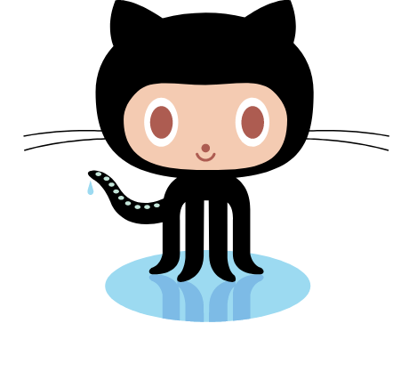
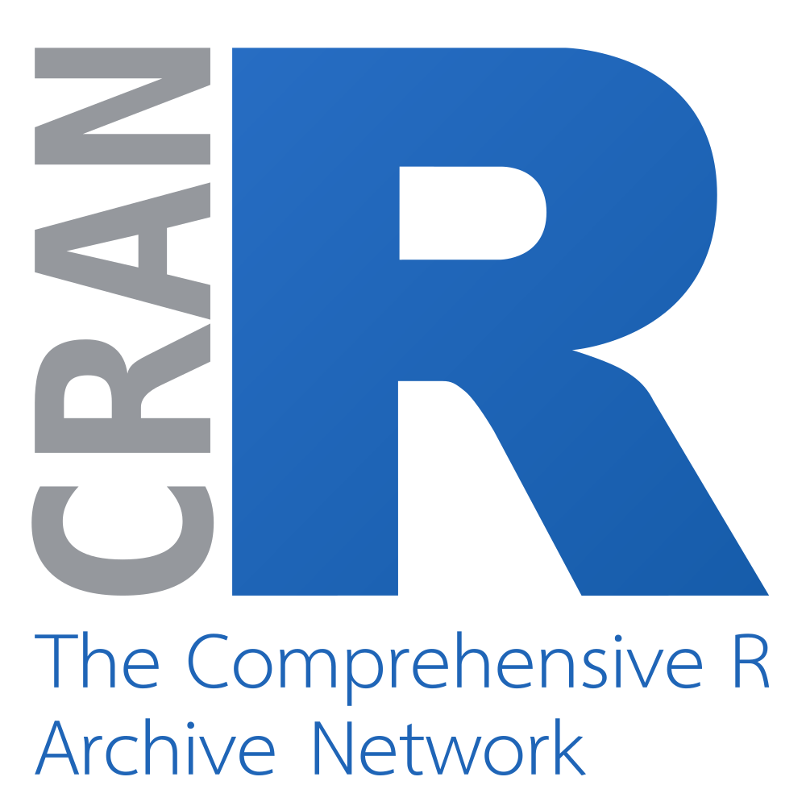
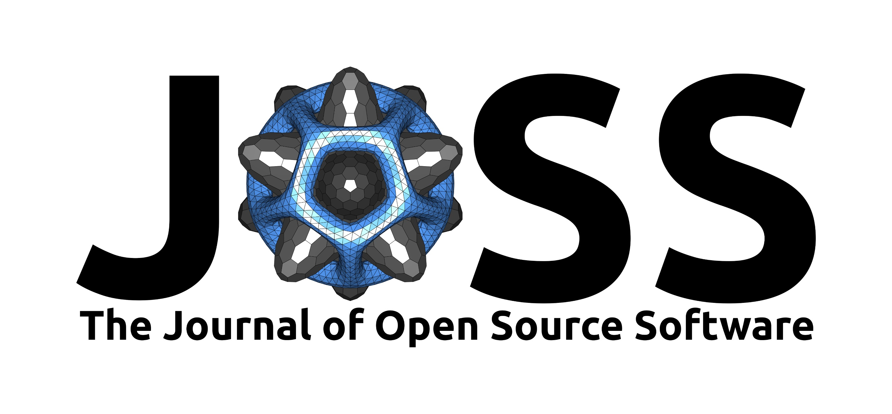

Getting Credit for Tool Creation
https://debruine.github.io/talks/tool-credit-2026/
Abstract
This talk covers why and how you can get credit for your research software. Projects on GitHub or other repositories should contain a README, License, citation info, and stable releases. This can facilitate the creation of a DOI with Zenodo or other methods. Tools can also be described in a software paper. These objects can and should be included in Enlighten.
Why credit software?
- Transparency
- Funder requirements
- So you can cite your software
- So other people can find and use your software
- Responsible Recognition: We value diverse scholarly outputs beyond standard articles, including datasets, software, protocols, and code (DORA)
GitHub
- README
- Clear role descriptions with ORCiDs
- Explicit License
- CITATION.cff
- Releases

README
All projects should have a README that explains:
- What the software does
- How users can get started
- Where users can get help
- Who maintains and contributes
Role Descriptions
- DESCRIPTION file of R package
- CONTRIBUTORS.md
- CRediT Taxonomy
License
- makes it available for future use by others
- allows others to understand if they can use, copy, modify, resell or distribute the software
- makes clear who is liable e.g. if something goes wrong with the software
- will increase the impact of your research through reuse and development by others
- choose a license
License Comparison
| License | Commercial use? | Open mods? | Patent? | Good choice when… |
|---|---|---|---|---|
| MIT | ✅ Yes | ❌ No | ❌ No | You want simple, unrestricted reuse. |
| BSD 3-Clause | ✅ Yes | ❌ No | ❌ No | You want permissive reuse plus non-endorsement protection. |
| Apache 2.0 | ✅ Yes | ❌ No | ✅ Yes | You want permissive reuse plus patent protection. |
| LGPLv3 | ✅ Yes, with conditions | ⚠️ Changes must be open | ✅ Yes | You’re releasing a library with weak copyleft. |
| GPLv3 | ⚠️ Yes, with conditions | ✅ Generally | ✅ Yes | You want derivative software to remain open. |
``
CITATION.cff
Releases
Use versioned GitHub releases such as v1.0.0, so there is an identifiable version corresponding to what someone actually used.
Get a DOI
A Digital Object Identifier is a unique and permanent ID used to identify academic papers, journal articles, and other digital data objects.
Zenodo
- Get a Zenodo account
- Link your GitHub account
- Sync your repositories
- Enable a repository
- Create a release on GitHub
- Get your Zenodo DOI(s) and badge
- Publish a new release for each version
Other Repositories
You can archive a version of your software in a repository that provides DOIs, such as Figshare or Dryad.
This is more suitable for software that is no longer maintained or under development.
CRAN
If you write R packages, accepted CRAN submissions now get a DOI automatically.

JOSS
- Journal of Open Source Software
- Paper with software description
- Links to code repository
- Paper and code reviewed via GitHub issues
- Submission

Enlighten
Just like accepted papers, you should track your datasets, code, software, and any research object with a DOI on Enlighten.
Resources
Thank You!
Getting Credit for Tool Creation
https://debruine.github.io/talks/tool-credit-2026/
Lisa DeBruine